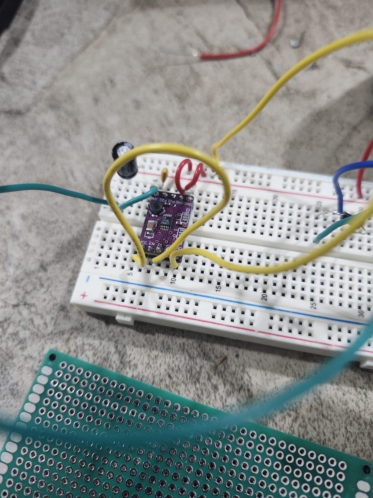
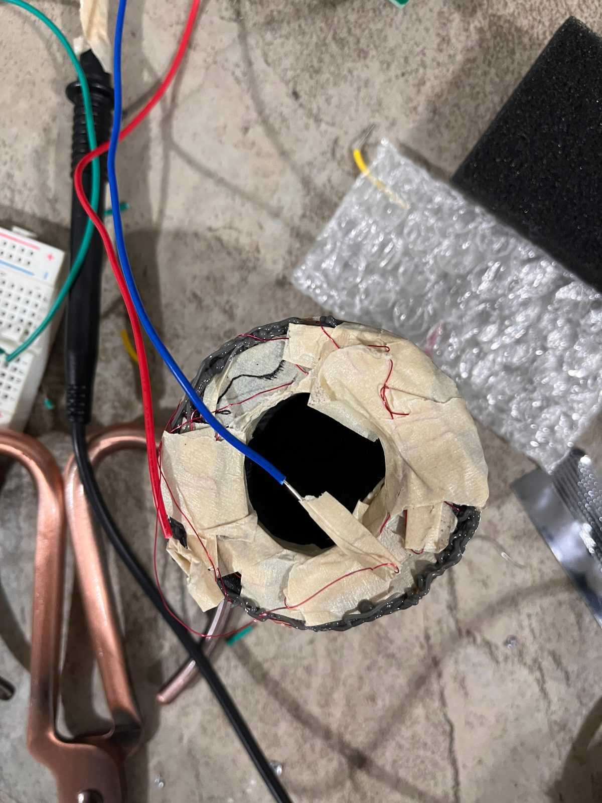
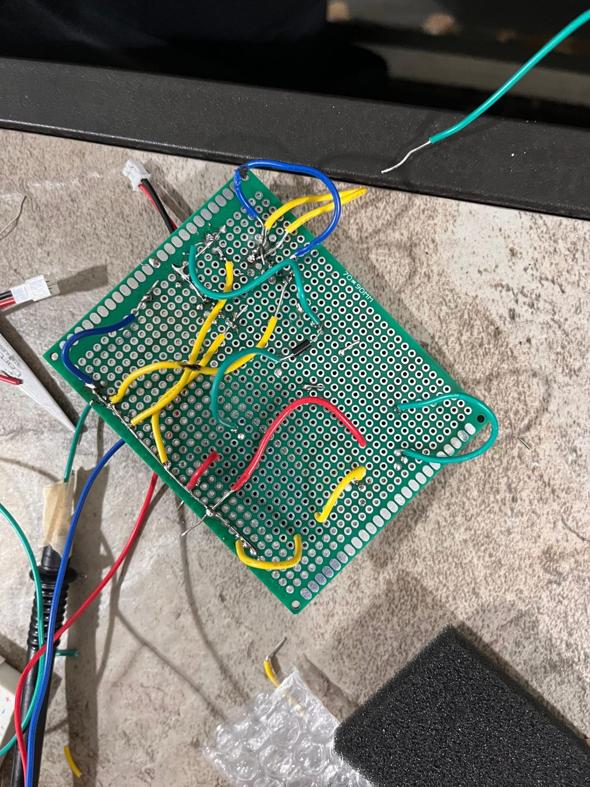
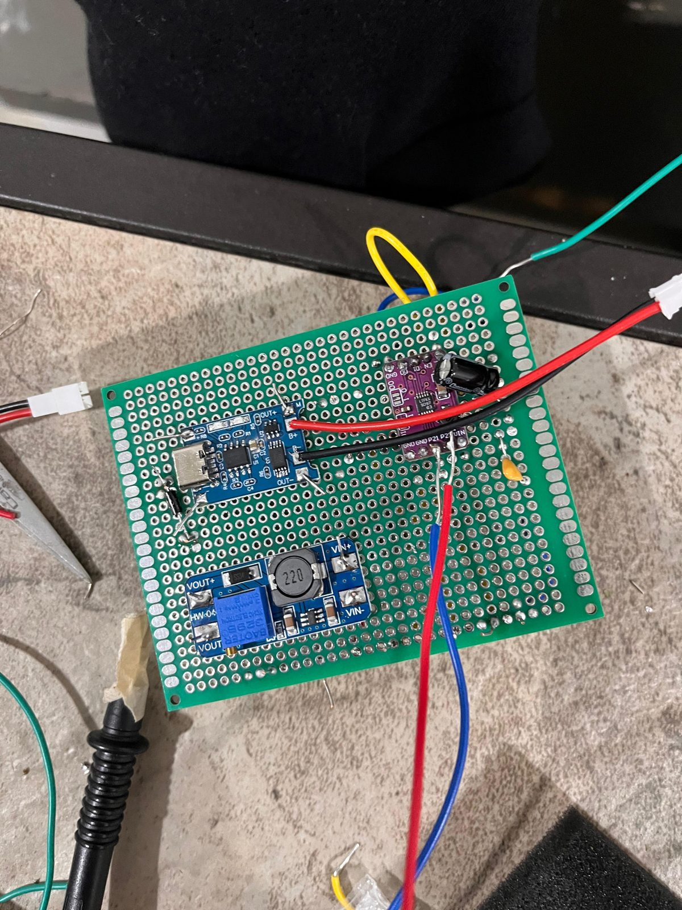
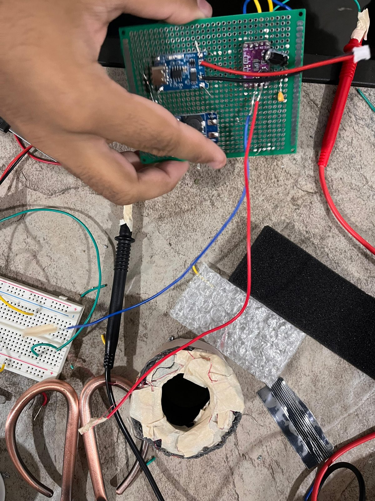
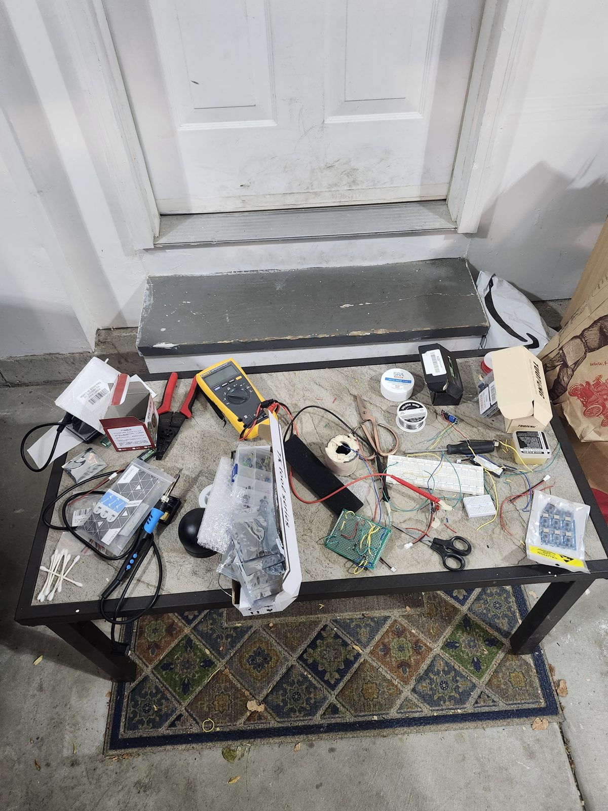

<title>Fluxpack</title>
<link rel="preconnect" href="https://fonts.googleapis.com">
<link rel="preconnect" href="https://fonts.gstatic.com" crossorigin>
<link rel="stylesheet" href="https://fonts.googleapis.com/css2?family=Bricolage+Grotesque:opsz,wght@12..96,500;12..96,700&family=IBM+Plex+Sans:wght@400;500&family=IBM+Plex+Mono:wght@400;500&display=swap">
<script>window.MathJax = { svg: { fontCache: 'none' } };</script>
<script src="https://cdnjs.cloudflare.com/ajax/libs/mathjax/3.2.2/es5/tex-svg.min.js" async></script>
<style>
/* Layout: single column, wide hero with the animated coil, then a spec sheet feel for the build details. */
:root {
  --bg: #eef1f3;
  --surface: #ffffff;
  --fg: #14202b;
  --muted: #55646f;
  --line: #cfd7dd;
  --copper: #b8531c;
  --magnet-n: #c23a3a;
  --magnet-s: #2f6f9f;
  --font-display: "Bricolage Grotesque", "Helvetica Neue", Arial, sans-serif;
  --font-body: "IBM Plex Sans", system-ui, -apple-system, "Segoe UI", sans-serif;
  --font-mono: "IBM Plex Mono", ui-monospace, Menlo, Consolas, monospace;
}
@media (prefers-color-scheme: dark) {
  :root:not([data-theme="light"]) {
    --bg: #0f171e; --surface: #17222b; --fg: #e6ecf0; --muted: #98a8b3; --line: #2a3945;
    --copper: #e08a4f; --magnet-n: #e46a6a; --magnet-s: #5aa2d4;
    color-scheme: dark;
  }
}
:root[data-theme="dark"] {
  --bg: #0f171e; --surface: #17222b; --fg: #e6ecf0; --muted: #98a8b3; --line: #2a3945;
  --copper: #e08a4f; --magnet-n: #e46a6a; --magnet-s: #5aa2d4;
  color-scheme: dark;
}
* { box-sizing: border-box; }
body {
  background: var(--bg); color: var(--fg);
  font-family: var(--font-body); font-size: 17px; line-height: 1.6;
  padding-inline: 16px; padding-block: 32px 64px;
}
.wrap { max-width: 880px; margin-inline: auto; display: flex; flex-direction: column; gap: 72px; }
h1, h2, h3 { font-family: var(--font-display); text-wrap: balance; margin: 0; line-height: 1.1; }
h1 { font-size: clamp(2.6rem, 8vw, 4.6rem); font-weight: 700; letter-spacing: -0.02em; }
h2 { font-size: clamp(1.6rem, 4vw, 2.1rem); font-weight: 700; letter-spacing: -0.01em; }
h3 { font-size: 1.15rem; font-weight: 500; }
p { margin: 0; max-width: 65ch; }
.label { font-family: var(--font-mono); font-size: 0.75rem; letter-spacing: 0.1em; text-transform: uppercase; color: var(--muted); }
a { color: var(--copper); }
:focus-visible { outline: 2px solid var(--copper); outline-offset: 3px; }

.hero { display: flex; flex-direction: column; gap: 24px; }
.hero .lede { font-size: 1.2rem; color: var(--muted); }
.hero h1 span { color: var(--copper); }
.rig { background: var(--surface); border: 1px solid var(--line); border-radius: 6px; padding: 12px 8px 4px; }
.rig svg { display: block; width: 100%; height: auto; }
.rig .cap { padding: 4px 8px 8px; }
.coil-line { stroke: var(--copper); stroke-width: 3; stroke-linecap: round; fill: none; }
.tube { fill: none; stroke: var(--line); stroke-width: 2; }
.mag-n { fill: var(--magnet-n); }
.mag-s { fill: var(--magnet-s); }
.mag-txt { font-family: var(--font-mono); font-size: 11px; fill: #fff; font-weight: 500; }
.axis-txt { font-family: var(--font-mono); font-size: 10px; fill: var(--muted); }
.magnet { animation: swing 2.4s ease-in-out infinite alternate; }
@keyframes swing { from { transform: translateX(0); } to { transform: translateX(150px); } }
@media (prefers-reduced-motion: reduce) { .magnet { animation: none; transform: translateX(75px); } }

section { display: flex; flex-direction: column; gap: 20px; }
.steps { display: grid; grid-template-columns: repeat(auto-fit, minmax(220px, 1fr)); gap: 24px; padding: 0; margin: 0; list-style: none; }
.steps li { display: flex; flex-direction: column; gap: 8px; border-top: 2px solid var(--fg); padding-top: 12px; min-width: 0; }
.steps li p { color: var(--muted); font-size: 0.97rem; }

.eq { background: var(--surface); border: 1px solid var(--line); border-radius: 6px; padding: 16px; overflow-x: auto; display: flex; flex-direction: column; gap: 6px; }
.eq .raw { font-family: var(--font-mono); font-size: 1.05rem; }

.chain { display: grid; grid-template-columns: repeat(auto-fit, minmax(200px, 1fr)); gap: 12px; }
.stage { background: var(--surface); border: 1px solid var(--line); border-radius: 6px; padding: 16px; display: flex; flex-direction: column; gap: 6px; min-width: 0; }
.stage .part { font-family: var(--font-mono); font-weight: 500; color: var(--copper); }
.stage .io { font-family: var(--font-mono); font-size: 0.8rem; color: var(--muted); }
.stage p { font-size: 0.95rem; color: var(--muted); }

.specs { width: 100%; border-collapse: collapse; }
.specs th, .specs td { text-align: left; padding: 12px 8px 12px 0; border-bottom: 1px solid var(--line); vertical-align: top; }
.specs th { font-family: var(--font-mono); font-weight: 400; font-size: 0.8rem; letter-spacing: 0.08em; text-transform: uppercase; color: var(--muted); width: 38%; }
.specs td { font-variant-numeric: tabular-nums; }
.specs-wrap { overflow-x: auto; }
.tbd { color: var(--muted); font-style: italic; }

.videos { display: grid; grid-template-columns: repeat(auto-fit, minmax(240px, 1fr)); gap: 16px; }
.photos { display: grid; grid-template-columns: repeat(auto-fit, minmax(240px, 1fr)); gap: 16px; }
figure { margin: 0; display: flex; flex-direction: column; gap: 8px; min-width: 0; }
figure video, figure img { display: block; width: 100%; height: auto; border-radius: 4px; background: var(--surface); border: 1px solid var(--line); }
figure .frame { display: block; aspect-ratio: 4 / 3; overflow: hidden; border-radius: 4px; border: 1px solid var(--line); background: var(--surface); }
figure .frame img, figure .frame video { height: 100%; object-fit: cover; border: 0; border-radius: 0; }
figure.tall .frame { aspect-ratio: 3 / 4; }
figcaption { font-size: 0.9rem; color: var(--muted); max-width: 40ch; }
.sub { display: flex; flex-direction: column; gap: 16px; }

footer { border-top: 1px solid var(--line); padding-top: 20px; color: var(--muted); font-size: 0.9rem; }
</style>

<main class="wrap">
  <header class="hero">
    <span class="label">Wearable energy harvester · in development since 2024</span>
    <h1>Flux<span>pack</span></h1>
    <p class="lede">The induction backpack: it makes electricity from your walk. A magnet swings through a coil with every step, and the current it induces charges a lithium-ion battery.</p>
    <div class="rig" role="img" aria-label="Animation: a magnet sliding back and forth inside a copper coil.">
      <svg viewBox="0 0 420 136" xmlns="http://www.w3.org/2000/svg">
        <rect class="tube" x="80" y="48" width="260" height="34" rx="6"/>
        <g id="coil"></g>
        <g class="magnet">
          <rect class="mag-n" x="96" y="53" width="30" height="24" rx="2"/>
          <rect class="mag-s" x="126" y="53" width="30" height="24" rx="2"/>
          <text class="mag-txt" x="105" y="69">N</text>
          <text class="mag-txt" x="136" y="69">S</text>
        </g>
        <text class="axis-txt" x="80" y="108">coil: 5,000 turns of 32 AWG wire</text>
        <text class="axis-txt" x="80" y="124">magnet slides with each step</text>
      </svg>
      <p class="label cap">Simplified diagram, not to scale</p>
    </div>
  </header>

  <section id="how">
    <h2>How it works</h2>
    <ol class="steps">
      <li>
        <span class="label">Walk</span>
        <h3>The body does the work</h3>
        <p>Each step shakes the pack. A magnet inside slides back and forth through the coil.</p>
      </li>
      <li>
        <span class="label">Induce</span>
        <h3>A moving field makes current</h3>
        <p>The changing magnetic flux through the coil induces an alternating voltage across its ends.</p>
      </li>
      <li>
        <span class="label">Store</span>
        <h3>Power circuit to battery</h3>
        <p>Three small modules turn that AC into regulated 5 V and charge a lithium-ion cell safely.</p>
      </li>
    </ol>
    <div class="eq">
      <span class="label">Faraday's law of induction</span>
      <div>\[ \varepsilon = -N\,\frac{d\Phi}{dt} \]</div>
      <p class="raw" style="display:none" id="eq-fallback">ε = −N · dΦ/dt</p>
      <p style="color:var(--muted);font-size:0.95rem">More turns N and a faster-changing flux Φ give more voltage, which is why the coil has 5,000 turns.</p>
    </div>
  </section>

  <section id="circuit">
    <h2>The power chain</h2>
    <div class="chain">
      <div class="stage">
        <span class="label">Stage 1</span>
        <span class="part">LTC3588</span>
        <span class="io">AC in → regulated DC out</span>
        <p>Rectifies the coil's alternating output into steady DC.</p>
      </div>
      <div class="stage">
        <span class="label">Stage 2</span>
        <span class="part">MT3608</span>
        <span class="io">DC in → 5 V out</span>
        <p>Boost converter that steps the voltage up to 5 V.</p>
      </div>
      <div class="stage">
        <span class="label">Stage 3</span>
        <span class="part">TP4056</span>
        <span class="io">5 V in → Li-ion cell</span>
        <p>Charging module that fills the lithium-ion battery safely.</p>
      </div>
    </div>
  </section>

  <section id="specs">
    <h2>Build sheet</h2>
    <div class="specs-wrap">
      <table class="specs">
        <tbody>
          <tr><th scope="row">Generator</th><td>Oscillating magnet through a fixed coil</td></tr>
          <tr><th scope="row">Coil form</th><td>Custom CAD design, 3D printed</td></tr>
          <tr><th scope="row">Winding</th><td>5,000 turns, 32 AWG magnet wire</td></tr>
          <tr><th scope="row">Output</th><td>5 V, to charge a lithium-ion battery</td></tr>
          <tr><th scope="row">Testing</th><td>Coil output, efficiency and safety, across several prototypes</td></tr>
          <tr><th scope="row">Measured power</th><td class="tbd">To add: watts and charge time from walking tests</td></tr>
        </tbody>
      </table>
    </div>
  </section>

  <section id="gallery">
    <h2>It works</h2>
    <p>Testing the coil by hand: the magnet goes in and out of the coil while a multimeter reads the output.</p>
    <div class="videos">
      <figure>
        <video controls muted playsinline preload="none" poster="media/magnet-test-1.jpg" src="media/magnet-test-1.mp4">Your browser can't play this video.</video>
        <figcaption>Magnet moving through the coil, multimeter on the output.</figcaption>
      </figure>
      <figure>
        <video controls muted playsinline preload="none" poster="media/magnet-test-2.jpg" src="media/magnet-test-2.mp4">Your browser can't play this video.</video>
        <figcaption>A longer run of the same test.</figcaption>
      </figure>
      <figure>
        <video controls muted playsinline preload="none" poster="media/board-test.jpg" src="media/board-test.mp4">Your browser can't play this video.</video>
        <figcaption>Power board wired to the coil during a test.</figcaption>
      </figure>
    </div>
  </section>

  <section id="build">
    <h2>The build</h2>
    <p>From breadboard tests to the soldered power board.</p>
    <div class="photos">
      <figure class="tall">
        <a class="frame" href="media/breadboard-test.jpg" target="_blank" rel="noopener"></a>
        <figcaption>First breadboard test of the rectifier stage.</figcaption>
      </figure>
      <figure class="tall">
        <a class="frame" href="media/coil-form.jpg" target="_blank" rel="noopener"></a>
        <figcaption>The wound coil on its form, taped and wired.</figcaption>
      </figure>
      <figure class="tall">
        <a class="frame" href="media/perfboard-wiring.jpg" target="_blank" rel="noopener"></a>
        <figcaption>Wiring the power circuit onto perfboard.</figcaption>
      </figure>
      <figure class="tall">
        <a class="frame" href="media/perfboard-modules.jpg" target="_blank" rel="noopener"></a>
        <figcaption>Charger, boost converter and rectifier modules on the board.</figcaption>
      </figure>
      <figure class="tall">
        <a class="frame" href="media/circuit-and-coil.jpg" target="_blank" rel="noopener"></a>
        <figcaption>Checking the board next to the coil.</figcaption>
      </figure>
      <figure class="tall">
        <a class="frame" href="media/workbench.jpg" target="_blank" rel="noopener"></a>
        <figcaption>The workbench: multimeter, solder, wire and parts.</figcaption>
      </figure>
    </div>
  </section>

  <footer>
    <p>Self-directed project. This page is a first draft and will change.</p>
  </footer>
</main>

<script>
(function () {
  // Draw the coil windings as evenly spaced loops around the tube.
  var g = document.getElementById('coil');
  var ns = 'http://www.w3.org/2000/svg';
  for (var x = 92; x <= 328; x += 9) {
    var p = document.createElementNS(ns, 'path');
    p.setAttribute('d', 'M' + x + ' 40 Q' + (x + 5) + ' 65 ' + x + ' 90');
    p.setAttribute('class', 'coil-line');
    g.appendChild(p);
  }
  // If MathJax never loads, show the plain-text equation instead.
  setTimeout(function () {
    if (!(window.MathJax && window.MathJax.typesetPromise)) {
      var f = document.getElementById('eq-fallback');
      if (f) f.style.display = 'block';
    }
  }, 4000);
})();
</script>
